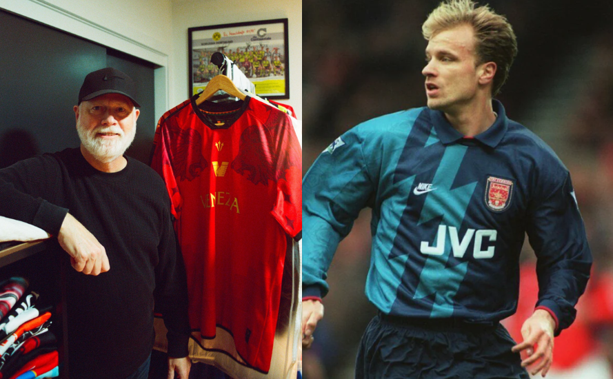

O que você tem acesso?

Camisas Autênticas
Catálogo com as camisas mais icônicas da história do futebol
Conquistas
Relembre conquistas históricas a partir de camisas

História
Viaje no tempo, visitando momentos marcantes no futebol

Dashboard
Saiba o preço de suas camisas e analise quem também gostou de um manto marcante do futebol
Camisa em Destaque

Mestres do Design
Drake Ramberg
Criou uniformes modernos e marcantes no futebol.
Brasil 1998

Giorgio Armani
Trouxe um estilo minimalista para os uniformes.
Manchester City 2011
Precificador
Descubra Quanto Vale Sua Camisa
Use nosso precificador e descubra o valor da sua camisa histórica em segundos.
Ver Preço da Minha CamisaR$ 1.250
Brasil 1998